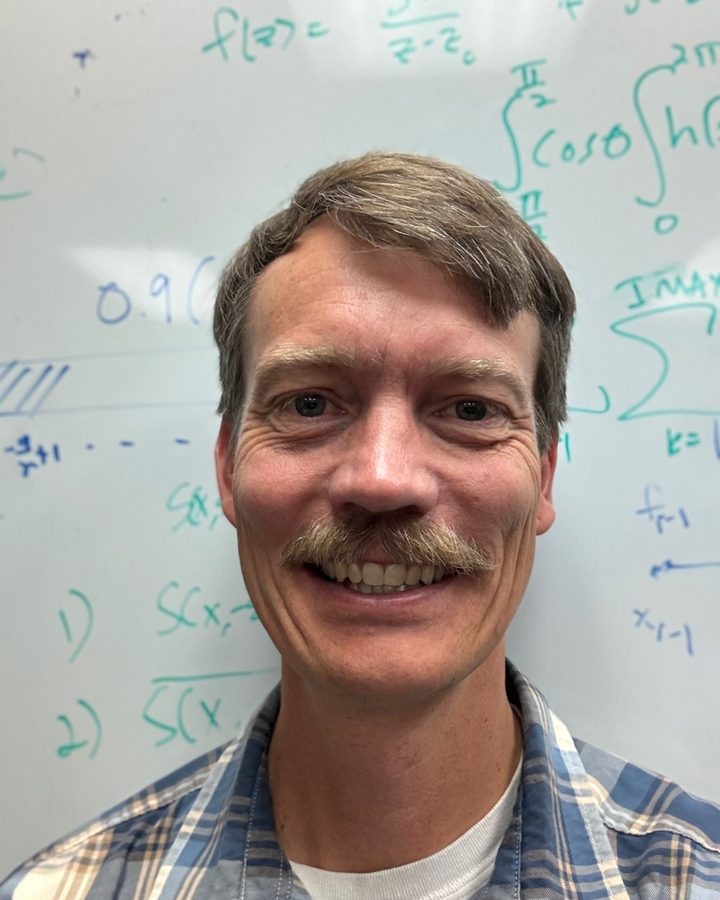

Professor · Department of Mathematics
Grady B. Wright
Computational mathematics and scientific computing.
Interim Associate Dean of Research, Creative Activity, and Graduate Education, College of Arts and Sciences, Boise State University

About me
I received a Ph.D. in Applied Mathematics from the University of Colorado at Boulder in 2003 and then spent the next four years as a National Science Foundation (NSF) Postdoctoral Fellow at the University of Utah before joining the Department of Mathematics at Boise State. I have worked as a software engineer in industry and held visiting research positions at the National Center for Atmospheric Research, Mathematical Institute at the University of Oxford, and Division of Scientific Computing at Uppsala University. I have previously served as Co-Director of the Computing PhD Program at Boise State and President and Treasurer of the SIAM Pacific Northwest (PNW) section. I am currently serving as the Interim Associate Dean of Research, Creative Activity, and Graduate Education in the College of Arts and Sciences at Boise State.
Research
My research focuses on computational mathematics and scientific computing, with an emphasis on developing, analyzing, and implementing novel numerical methods to model and simulate complex phenomena arising in a wide range of scientific and engineering disciplines.
My interests span multiple areas, including
- kernel approximation
- meshless/meshfree methods for PDEs
- PDEs on the sphere and more general surfaces
- spectral and high-order finite difference methods
- multilevel solvers/preconditioners
- the immersed boundary method
- rational approximation
I have also engaged in a broad spectrum of interdisciplinary domains, such as
- biological fluids
- climate modeling and numerical weather prediction
- geodynamics
- computer graphics
- cosmology
Teaching
I enjoy teaching and have had the opportunity to instruct a range of mathematics courses from the undergraduate to the graduate level. These courses include calculus, ordinary/partial differential equations, linear algebra, computational mathematics, complex variables, applied math, approximation theory, numerical analysis, numerical linear algebra, numerical differential equations, and matrix methods in data science. I have also instructed workshops and tutorials on radial basis function methods.
Courses taught